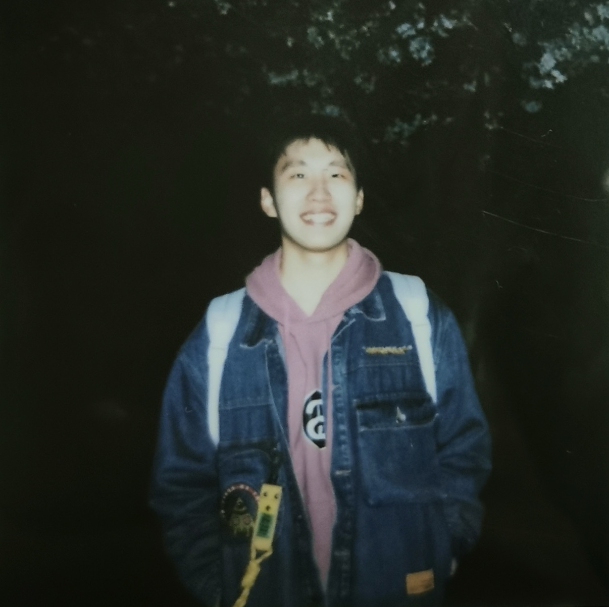
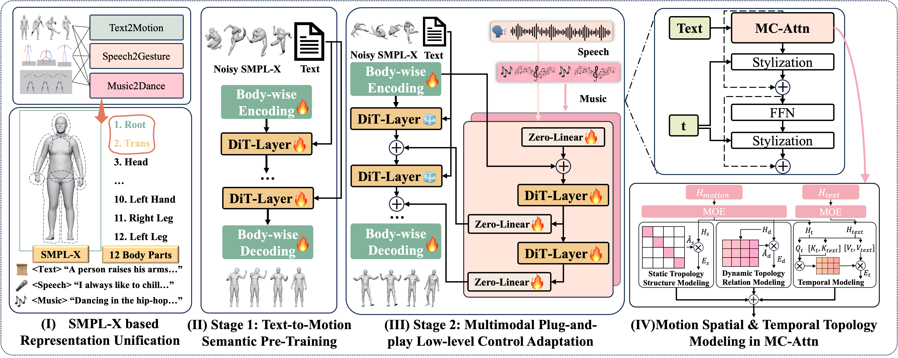
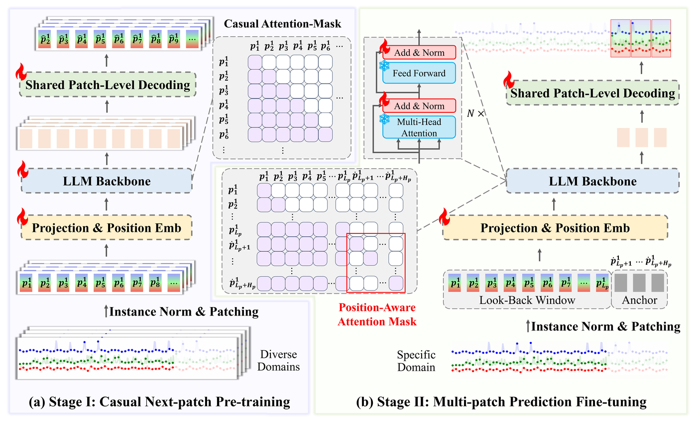

|
Ph.D. Student |
 |
Biography
Hi, I'm Yuxuan Bian (卞宇轩).
I am currently a first-year Ph.D. student in the CURE Lab at The Chinese University of Hong Kong guided by Prof. Qiang Xu.
Before this, I majored in Computer Science and Technology (minored in Artificial Intelligence) and got my bachelor's degree from Tongji University.
I have a broad interest in most areas of computer vision, especially in controllable video generation and human motion generation.
Please do not hesitate to reach out to me via email at yuxuanbian23@gmail.com !
Selected Publications
* equal contribution
|
 |
MotionCraft: Crafting Whole-Body Motion with Plug-and-Play Multimodal Controls
Under Review
|
|
 |
Multi-Patch Prediction: Adapting LLMs for Time Series Representation Learning
International Conference on Machine Learning (ICML), 2024
|

|
BrushNet : A Plug-and-Play Image Inpainting Model with Decomposed Dual-Branch Diffusion
European Conference on Computer Vision (ECCV), 2024
|

|
Direct Inversion: Boosting Diffusion-based Editing with 3 Lines of Code
International Conference on Learning Representations (ICLR), 2024
|
Experiences

|
Research Intern, Tencent ARC Laboratory
Topic: controllable Video Generation
Supervised by: Zhaoyang Zhang, Ying Shan
|
|
Quant Research Intern, Luoshu Investment
Topic: Portfolio Optimization
Supervised by: Weiqiang Sun
|
Professional Services
- Conference and Journal Reviewer for NeurIPS (2024), TNNLS(2024)
Selected Honors & Awards
- National Scholarship 2023
- Outstanding Graduate of Shanghai Province 2024
- Outstanding Bachelor Thesis Award of Tongji University, Top 1% 2024
- Qidi Scholarship 2023
- ITW Innovation Scholarship 2022
- ICML Travel Award 2023
- Silver Medal in Kaggle, American Express Default Prediction 2022
- Outstanding Student of Tongji University 2021, 2022, 2023